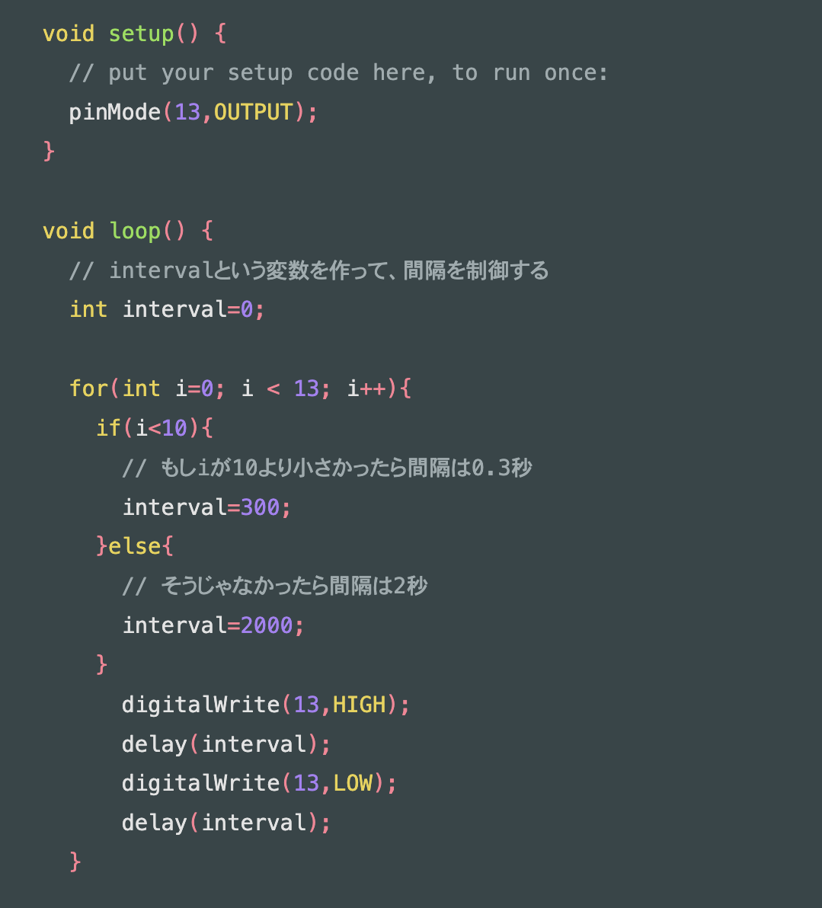
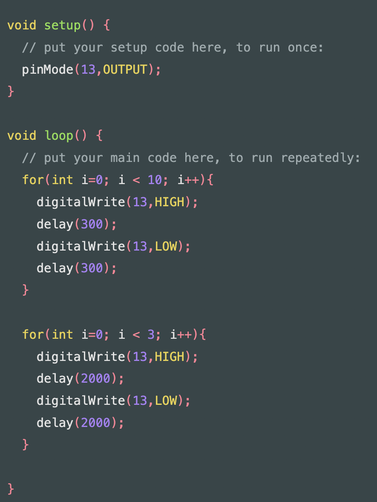
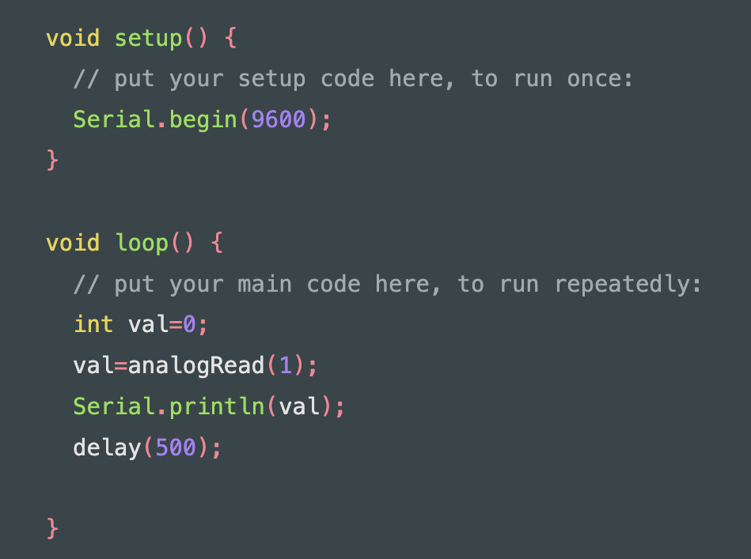
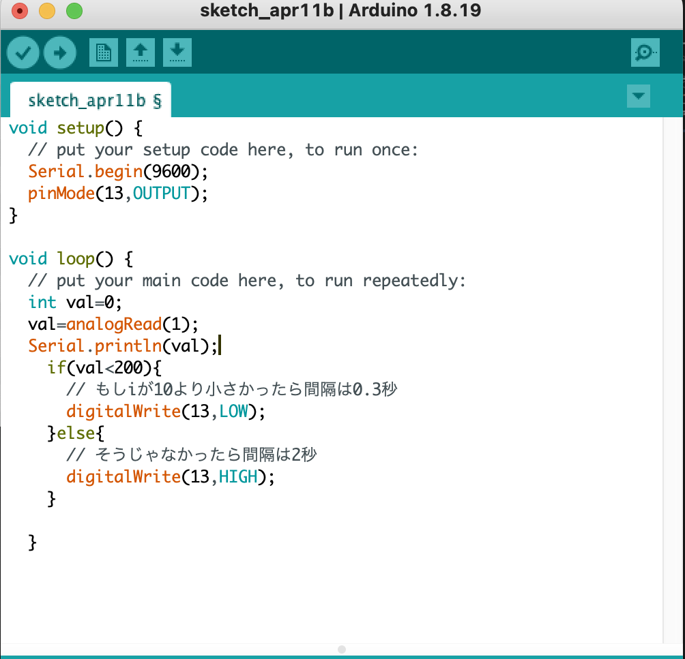

デザイン演習 第１回
メモ
- マイコン（授業で使うやつ）→Arduino UNO
- Wifiやbluetooth機能付きの代表―ESP32
- M5stack―ディスプレイ付き
- Sony-カメラモジュールや拡張機能が充実
プログラム
Arduinoの場合はJavaの文法とほぼ同じ。
{}で括って内容を表し、一項目ごとに
;で区切る。条件付けはif文を使う。
Void setup→起動時の動きを設定。
Void loop 起動後、同じ動きを繰り返す。
intは整数。
デジタルは０・１の世界/アナログは連続した数値
Arduino 日本語リファレンス（外部サイト）
独学プログラマーのプログラミングノート（外部サイト）
練習１：Lチカ（LEDを光らせる）
- LED：5V（過電流防ぐため、何ボルトかに注意）
LEDの足は長い方が＋（アノード）、短い方がー（カソード）
- Void setup→pinMode(13, output) ＝マイコンの13番ピンから出力する
- digitalWrite(13,HIGH); もしくはdigitalWrite(13,LOW);
＝HIGHは電源ON, LOWは電源OFFの意味
- delay(500); =delayは待ち時間、（）の中は１＝0.001秒
↓書き方は異なるが示している内容は同じ

練習２：明るさセンサー
- CdSセル：光センサー。光の強さに応じて電気抵抗が低下する。人の目の特性に近く、緑色の光の感度が高いので明るさセンサーに用いられる。暗いとセンサーの抵抗値が大きくなり、明るいところに置くと抵抗値が低くなる性質を持っています。
- Serial.begin(9600); ＝シリアルモニタを使う
- int val=0; →読み取った値を格納する変数
- val=analogRead(1); アナログピンから数値を読み取る。（）内でピンを指定。この場合A1のピンを使う。
- Serial.println(val); printlnでシリアルモニタに数値を表示

練習３：LED点灯と明るさセンサーを合体
- 暗いとLEDが光るようにプログラムする。
- 「暗い・明るいと〜」の条件はif文を使う。

次回までの課題
日常の中の負、正の感情をリスト化(準備中)
前のページに戻る